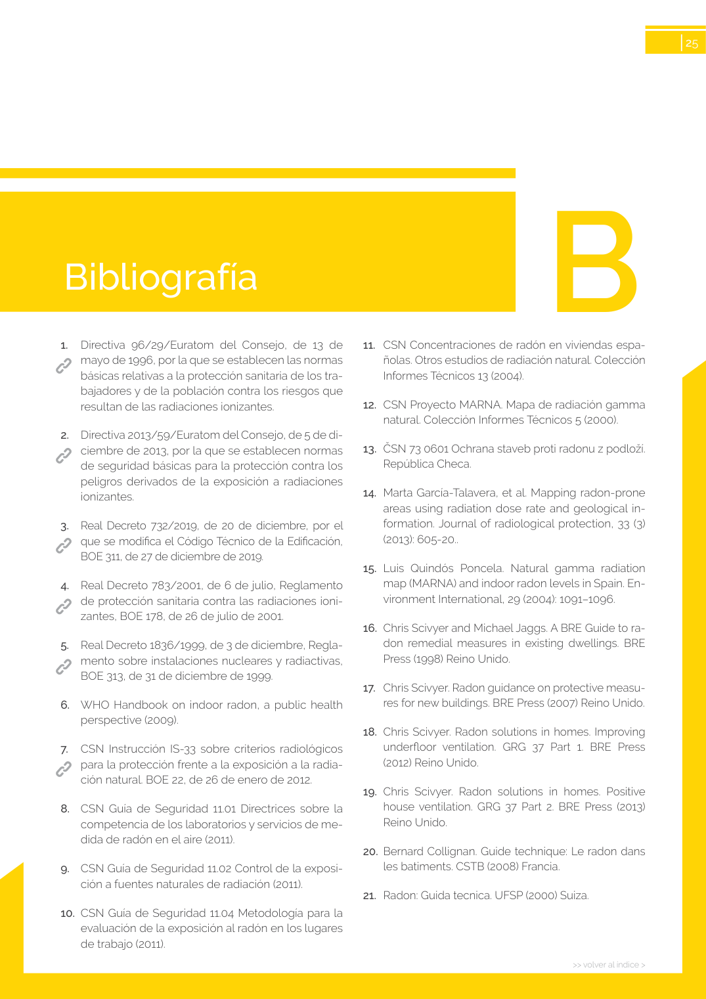

Guia de rehabilitacion frente al radon Fichas · edición sin-fecha · capa guia
Documento GUIA-PDF-f3314b0414fe · SHA-256 del PDF e58e54b822cf4ab00e258f0eb50c0f06a8c04e3730a7f530d224485e2a5bb02e
Copia fiel del PDF fuente · Fuente oficial
Ficha de la disposición en la fuente oficial
Créditos y autoría en el PDF fuente. Reproducción con cita de fuente y autores.
Permiso literal: Se permite la reproducción total o parcial del contenido de este nible en el momento de su publicación. No se aceptará por las institu documento siempre y cuando se cite la fuente original
Este documento ha sido elaborado por el Instituto de ciencias
de la construcción Eduardo Torroja (IETcc) bajo la supervisión
de la Dirección General de Agenda Urbana y Arquitectura del
Ministerio de Transportes, Movilidad y Agenda Urbana (MITMA).
El IETcc, perteneciente al Consejo Superior de Investigaciones
Científicas (CSIC), es el centro de investigación en edificación
de referencia en España. La Unidad de Calidad en la Construc
ción del IETcc asesora al MITMA en la elaboración del Código
Técnico de la Edificación que, desde el año 2019, cuenta con la
sección HS6 Protección frente a la exposición al radón.
Dirección y Coordinación:
Ministerio de Transportes, Movilidad y Agenda Urbana
Isabel Marcos Anasagasti
Raquel Lara Campos
Eduardo González de Prado
Instituto de ciencias de la construcción Eduardo Torroja CSIC
Pilar Linares Alemparte
Autoras:
Pilar Linares Alemparte
Sonia García Ortega
Colaboradoras:
Virginia Sánchez Ramos
Karina Angélica García Pardo
Edita:
Centro de Publicaciones Secretaría General Técnica
Ministerio de Transportes, Movilidad y Agenda Urbana©
Entidad colaboradora:
Consejo Superior de Investigaciones Científicas · CSIC
Ministerio de Ciencia e Innovación
Catálogo de publicaciones de la Administración General
del Estado: publicacionesoficiales.boe.es
Centro virtual de publicaciones del Ministerio de Transpor
tes, Movilidad y Agenda Urbana: www.mitma.gob.es
Página web del Código Técnico de la Edificación:
SECRETARÍA GENERAL DE www.codigotecnico.org AGENDA URBANA Y VIVIENDA MINISTERIO GOBIERNO DE TRANSPORTES, MOVILIDAD DE ESPAÑA Y AGENDA URBANA DIRECCIÓN GENERAL DE
Maquetación y diseño gráfico: AGENDA URBANAY ARQUITECTURA
Lapizmente. Estrategia • Diseño Gráfico
CIENCIAFotografía portada: GOBIERNODE ESPAÑA MINISTERIODEE INNOVACIÓN
Sonia García Ortega
Los contenidos o ideas recogidas en este documento pertenecen a
sus autores. Este documento está basado en el conocimiento dispo Se permite la reproducción total o parcial del contenido de este
nible en el momento de su publicación. No se aceptará por las institu documento siempre y cuando se cite la fuente original y a sus
ciones ni los autores implicados responsabilidad de ningún tipo por el autores.
uso de estas recomendaciones. Las figuras tienen carácter ilustrativo
y no deben interpretarse como detalles constructivos.Formatos: JSON del segmento · Markdown
B >> volver al índice > 25 1. Directiva 96/29/Euratom del Consejo, de 13 de mayo de 1996, por la que se establecen las normas básicas relativas a la protección sanitaria de los tra bajadores y de la población contra los riesgos que resultan de las radiaciones ionizantes. 2.Directiva 2013/59/Euratom del Consejo, de 5 de di ciembre de 2013, por la que se establecen normas de seguridad básicas para la protección contra los peligros derivados de la exposición a radiaciones ionizantes. 3. Real Decreto 732/2019, de 20 de diciembre, por el que se modifica el Código Técnico de la Edificación, BOE 311, de 27 de diciembre de 2019. 4.Real Decreto 783/2001, de 6 de julio, Reglamento de protección sanitaria contra las radiaciones ioni zantes, BOE 178, de 26 de julio de 2001. 5.Real Decreto 1836/1999, de 3 de diciembre, Regla mento sobre instalaciones nucleares y radiactivas, BOE 313, de 31 de diciembre de 1999. 6.WHO Handbook on indoor radon, a public health perspective (2009). 7. CSN Instrucción IS-33 sobre criterios radiológicos para la protección frente a la exposición a la radia ción natural. BOE 22, de 26 de enero de 2012. 8.CSN Guía de Seguridad 11.01 Directrices sobre la competencia de los laboratorios y servicios de me dida de radón en el aire (2011). 9.CSN Guía de Seguridad 11.02 Control de la exposi ción a fuentes naturales de radiación (2011). 10. CSN Guía de Seguridad 11.04 Metodología para la evaluación de la exposición al radón en los lugares de trabajo (2011). 11.CSN Concentraciones de radón en viviendas espa ñolas. Otros estudios de radiación natural. Colección Informes Técnicos 13 (2004). 12.CSN Proyecto MARNA. Mapa de radiación gamma natural. Colección Informes Técnicos 5 (2000). 13.ČSN 73 0601 Ochrana staveb proti radonu z podloží. República Checa. 14.Marta García-Talavera, et al. Mapping radon-prone areas using radiation dose rate and geological in formation. Journal of radiological protection, 33 (3) (2013): 605-20.. 15.LuisQuindós Poncela. Natural gamma radiation map (MARNA) and indoor radon levels in Spain. En vironment International, 29 (2004): 1091–1096. 16.Chris Scivyer and Michael Jaggs. A BRE Guide to ra don remedial measures in existing dwellings. BRE Press (1998) Reino Unido. 17.Chris Scivyer. Radon guidance on protective measu res for new buildings. BRE Press (2007) Reino Unido. 18.Chris Scivyer. Radon solutions in homes. Improving underfloor ventilation. GRG 37 Part 1. BRE Press (2012) Reino Unido. 19.Chris Scivyer. Radon solutions in homes. Positive house ventilation. GRG 37 Part 2. BRE Press (2013) Reino Unido. 20. Bernard Collignan. Guide technique: Le radon dans les batiments. CSTB (2008) Francia. 21.Radon: Guida tecnica. UFSP (2000) Suiza.
